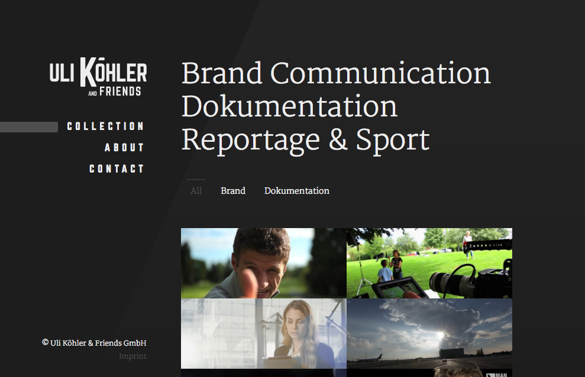

August 2015
Ulikoehlerandfriends
Uli Köhler is a reporter and filmmaker working for both german and international TV stations like ARD, Bayrisches Fernsehen, SAT1, Pro7, N24 and SKY but also producing documentations, image movies as a screenwriter and regisseur.
For the Uli Köhler & Friends GmbH – a team of experienced journalists, film makers and animators – we developed a mobile friendly portfolio website for their projects.
